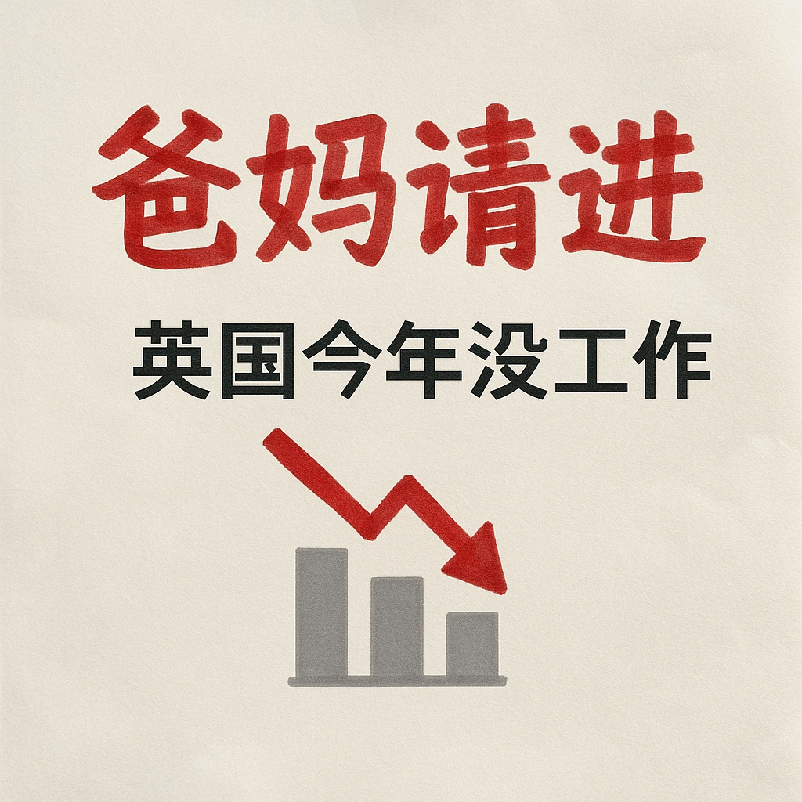
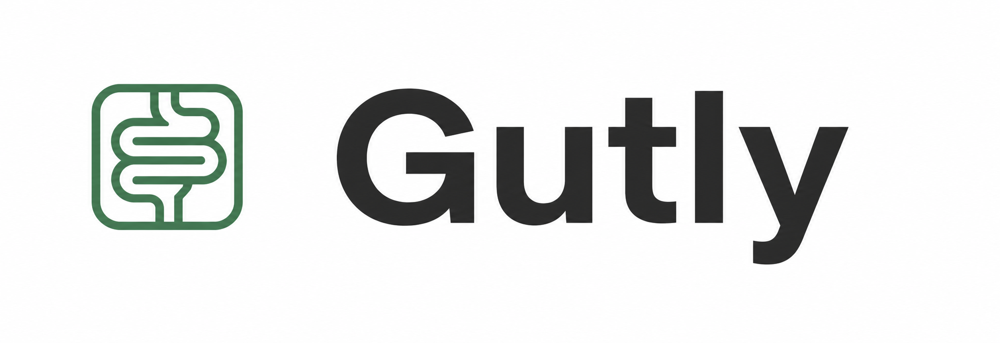

Human Context
Products should capture the real-life context that does not appear in a search result or generated answer.
Human-centered AI product studio
ZenTech builds around the unmet needs of the AI era: trust, context, care, prevention, and safer real-world experiences.

"Save the last 30 seconds."
Voice-first road safety prototypeWhy ZenTech
Products should capture the real-life context that does not appear in a search result or generated answer.
The strongest signals often come from patterns over time, especially in personal health and behavior.
Useful AI should reduce friction in stressful moments without distracting people or overclaiming authority.
Product portfolio
AI can polish your application. Real mentors help you understand the room.
A career-support marketplace for Chinese-speaking overseas students and job seekers, connecting them with trusted working professionals for CV review, mock interviews, industry context, referral guidance, and confidence through the job search.


Digestive health is not a one-time snapshot. The signal is in the pattern.
An AI gut-health companion that helps users track stool, food, symptoms, and trends over time, turning daily digestive signals into personal insights and future preventive health intelligence.


Software and hardware concepts focused on making healthcare easier to understand, monitor, and live with.
A voice-first road safety assistant for drivers, combining live camera capture with hands-free incident saving and reporting workflows.
Build philosophy
Health products are framed around tracking, patterns, and personal insight rather than diagnosis or medical advice.
Driver-safety concepts require market-specific legal review, user confirmation, and low-distraction interaction design.
Career products focus on guidance, context, and connection without promising job outcomes or guaranteed referrals.
Early Access
Register your interest and we’ll email you when free trials or early access become available.